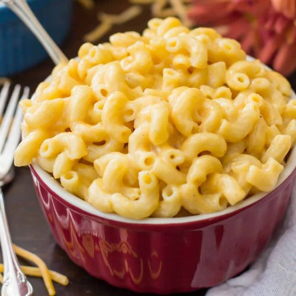

Mac 'n Cheese

Description
Indulge in the ultimate comfort food with this creamy mac 'n cheese recipe. This macaroni is eneveloped in a velvety cheese sauce that is both rich and satisfying. This classic dish is a nostalgic favourite that never goes out of style. Whether enjoyed as a hearty main course or a delightful side, this mac 'n cheese brings warmth to every bite, making it a go-to recipe for cozy gatherings and family dinners.
Ingredients:
- 227g dried macaroni about 2 cups (8 oz)
- 1 cup whole milk (250ml)
- 2 Tablespoons salted or unsalted butter (30g)
- ½ teaspoon salt
- ¼ - ½ teaspoon ground black pepper
- ¼ teaspoon smoked paprika (optional)
- ¼ teaspoon ground mustard (optional)
- 1 cup freshly shredded cheddar cheese (113g)
- 4 slices Parmalat sliced cheese, or any brand of sliced cheese (cheddar)
Steps:
- Bring 3 cups of well-salted water to a boil in a medium-saucepan over high heat.
- Once water comes to boil, add pasta, return to a boil, and cook 7 minutes, stirring occasionally.
- Strain pasta, leaving the pasta in the strainer and returning the saucepan to burner over medium-low heat.
- Combine milk, butter, salt, pepper and paprika and mustard in the saucepan and stir frequently over low heat until butter is melted.
- Return pasta to saucepan and stir well.
- Add cheeses, allow to sit about 30 seconds until slightly melty and then stir until all noodles are coated. Don't turn up the heat or the cheese will not melt properly.
- Serve immediately. Stir in any desired add-ins (such as bacon) immediately before serving.
Return to home